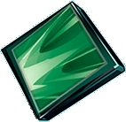

All Powers start out giving you an initial selection of options. After you meet certain prerequisites other options will become available. For example you won't be offered Focus Fire to deal more Flame damage to bosses until after you have chosen a skill that deals Flame damage.
Legendary Powers require certain prerequisites. That I discuss in the Legendary section at the bottom.
Astral Dark
Initial Offerings
Cloak of Shadow
Special or Tool grants Dark Shell for 1.8s / 2.4s / 3.2s, dealing 10 / 25 / 40 Dark damage and applying 1 stack of Darkness to neaby enemies
Nightfall
Final Strike applies 1 stack of Darkness for 3 / 4 / 5s and deals 10 / 15 / 25 Dark damage.
Secondary Offerings
Call of the Void
Deal 10 / 15 / 20 Dark damage and pull in nearby enemies upon defeating an enemy affected by Darkness.
Core Collapse
Stun nearby enemies for 0.5s / 1s / 1.5s upon defeating an enemy affected by Darkness
Dark Attakcs
+25% / 40% / 60% Attack damage against enemies affected by Darkness.
Dark Embrace
+3% / 4% / 5% damage dealt and +5% / 7% / 10% Move Speed for each Astral Dark power obtained.
Dark Star
Remove all of your Splinter's Revives. Gain +30% damage, plus 20% for each Splinter's Revive removed.
Dragon's Claw
+10% increased damage dealt. Gain an additional 10% / 15% / 20% whenever you select Dragon Coins in the Room Rewards screen.
Eternal Darkness
+50% / 80% / 100% duration of Negative Effects you apply to enemies.
Gift of the Dragon
Gain 80 Dragon coins and 200 Scrap.
Lingering Darkness
Darkness deals 10 / 15 / 25 Dark damage per second to affected enemies.
Shifting Shadow
Dash deals 15 / 25 / 35 Dark damage, increased by 300% to targets affected by Darkness.
After Darkness Stacks? and Flame Damage
*DARK FLAME* (Dark & Flame)
+40% Flame Damage against targets affected by Darkness.
After Dark Damage? and Shuriken Breaker
*FINISHER* (Astral Dark & Ninja)
Attacks and Specials instantly defeat enemies affected by Guard Break that are below 25% health.
 Astral Light
Astral Light
Initial Offerings
Light Attacks
Attack damage increased by 4% / 7% / 10% of Max Health.
Shimmering Shield
Grant Light Shell for 1.2s / 1.8s / 2.4s at the start of your Dash.
Secondary Offerings
Ancestral Guardian
Gain Light Shell for 15s / 20s / 25s after the start of combat.
Daybreak
Attacks apply 1 / 2 / 3 stack(s) of Blinding Light for 3s / 4s / 5s. Each stack reduces damage dealt by 5%. Max 5 Stacks.
Eternal Light
+40% / 60% / 80% Positive Effect duration.
Light Embrace
Reduce damage received by 2% / 2.5% / 3% for each Astral Light power obtained.
Radiant Warrior
Special and Tool grants Light Shell for 1.2s / 1.8s / 2.4s
Revival
Gain 1 Splinter's Revive(s). +30 / 60 Max Health.
After Shimmering Shield
Astral Insight
Increase damage by 30% / 40% / 60% while Light Shell is active.
Illumination
Light Shell reflects projectiles. Reflected projectiles deal 30% / 45% / 60% of your Max Health as Light damage.
After Daybreak
Revved Up
Gain +10% / 15% / 20% chance of dodging enemy attacks when they are affected by Blinding Light.
After Light Attacks and Water Damage?
*BRIGHT SPRING* (Water & Light)
Attacks restore 2 health.
After Light Attacks and Utrom Damage?
*LIGHT HAMMER* (Utrom & Light)
Utrom damage is increased by 10% of your Max Health.
 Flame
Flame
Initial Offerings
Flame Abilities
Special and Tool deals 15 / 25 / 40 Flame damage.
Flame Dash
Deal 30 / 50 / 70 Flame damage to nearby enemies at the start of a Dash.
Flame Strike
Final Strike causes an explosion, dealing 20 / 30 / 40 Flame damage to nearby enemies.
Furious Attacks
+20% / 35% / 50% Attack Critical Hit chance.
Rage
Deal 40% / 70% / 100% increased damage while below 50% Health.
Rapid Fire
+20% / 35% / 50% damage dealt and +25% / 40% / 55% Move Speed for 25s /35s / 45s after the start of combat.
After Dealing Flame damage
Focus Fire
+15% / 20% / 30% Flame damage against Bosses.
Inferno
Apply Inferno to enemies hit by Flame damage for 3s. Inferno deals 15 / 20 / 25 Flame damage per second.
After Furious Attacks
Precision
+60% / 120% / 180% Critical Hit damage.
Incendiary Strikes
Deal 50 / 75 / 100 Flame damage when scoring a Critical Hit.
After Inferno
Blazing Inferno
+2s / 3s / 4s Inferno duration.
Preheated
+15% / 30% / 60% Global Critical Hit chance against targets affected by Inferno.
After Rapid Fire
Trailblazer
+15s duration of Rapid Fire. Whilst Rapid Fire is active defeating an enemy grants +1 / 2 / 3s duration and +5 / 10 / 15% damage.
After Flame Damage and Darkness
*DARK FLAME* (Dark & Flame)
+40% Flame Damage against targets affected by Darkness.
After Flame Damage and Frost
*FROSTFIRE* (Flame & Water)
Dealing Flame or Water damage with your Attack, Special, or Tool deals 30% damage of the opposite element.
After Flame Damage and Ooze Stacks
*SPONTANEOUS COMBUSTION* (Flame & Ooze)
Gain a 30% chance to deal 100 Flame damage when applying Ooze.
After Furious Attack? and Shurikens
*TEMPERED SHURIKEN* (Ninja & Flame)
+40% Critical Hit chance with Shuriken.
Ninja
Initial Offerings
Adrenaline
Gain a stack of Adrenaline upon defeating an enemy. Adrenaline increases Physical damage by 5% / 10% / 15%. 5 stacks max.
Extended Assault
Throw 1 / 2 / 3 Shuriken forward at the start of your Dash.
Quick Feet
+1 Dash charge(s).
Quick Hands
+1 / 2 / 3 Shuriken thrown.
Shinobi Supremacy
+10% / 15% / 20% Dodge chance.
Shuriken Attacks
Attacks have a 30% / 60% / 100% chance to throw a Shuriken forward.
After Adrenaline
Art of Darkness
Adrenaline now also increases Elemental damage by 10% / 15% / 20%.
After Throwing Shuriken
Shuriken Breaker
Shuriken apply Guard Break to enemy targets for 2s. Guard Break increases damage received by 15% / 25% / 35%.
Shuriken Engineer
Shuriken have a 30% / 60% / 100% chance of triggering Tool bonuses.
Throwing Arts: Chakram
Shuriken now boomerang, returning to your current position. -30% / -5% / 20% Shuriken Damage.
Throwing Arts: Ricochet
Shuriken now ricohet, bouncing off of enemies. -20% / +10% / +40% Shuriken damage.
Throwing Mastery
+40% / 65% / 90% Shuriken damage.
After Quick Feet
First Strike
+30% / 45% / 60% damage dealt for 1s after a Dash.
After Shinobi Supremacy
Ninjutsu Tactics
+15% / 25% / 25% Global Critical Hit chance for 2s / 2.5s / 3s upon Dodge.
After Shuriken Breaker and Dealing Dark damage
*FINISHER* (Astral Dark & Ninja)
Attacks and Specials instantly defeat enemies affected by Guard Break that are below 25% health.
After Quick Feet and Dealing Utrom damage
*REVOLUTION* (Utrom & Ninja)
Dash Attack's damage is increased by 1% of the enemies' Max Health.
After Adrenaline and Ooze Stacks
*SLIPPERY* (Ooze & Ninja)
Gain 30% Move Speed, charge Tool and Special 30% faster, and reduce Dash cooldown by 30% while at maximum Adrenaline.
After Shurikens and Furious Attack?
*TEMPERED SHURIKEN* (Flame & Ninja)
+40% Critical Hit chance with Shuriken.
Ooze
Initial Offerings
Ooze Abilities
Special and Tool applies 1 / 2 / 3 stack(s) of Ooze.
Ooze Attack
Attacks hace a 25% / 33% / 50% chance to apply 1 stack of Ooze.
Ooze Dash
Apply 1 / 2 / 3 stack(s) of Ooze to enemies hit by your Dash.
Ooze Strike
Final Strike applies 2 / 4 / 6 stack(s) of Ooze.
Shelf Life
Boosts last for an additional 2 / 4 / 6 rooms.
Special Spice
50% / 75% / 100% increased effectiveness of Boosts.
After Applying Ooze Stacks
Catalytic Consequence
Deal +15 / 25 / 35 damage with your Dash Attack for each Stack of Ooze on the enemy.
Chunky Mixture
Ooze can now stack up to 6 / 8 / 10 time(s).
Goo
+60% / +120% / +180% Ooze damage per second.
Goo'dbye
Enemies affected by Ooze now explode on defeat, dealing 50 / 100 / 150 Ooze damage to nearby enemies.
Living Ingredients
When Ooze expires, it is reapplied to 1 / 2 / 3 nearby unaffected enemies.
Potency
Ooze is now applied with an additional 1 / 2 / 3 stack(s).
Unfortunate Odor
Deal 10 / 45 / 80 Ooze damage and Stun enemies for 1s when applying Ooze. Bosses are not stunned.
After Utrom Damage and Ooze Stacks?
*SECRET OF THE OOZE* (Utrom & Ooze)
Reduce damage received by 30%
After Ooze Stacks and Adrenaline
*SLIPPERY* (Ninja & Ooze)
Gain 30% Move Speed, charge Tool and Special 30% faster, and reduce Dash cooldown by 30% while at maximum Adrenaline.
After Ooze Stacks and Water Damage?
*SOLUTION TO POLLUTION* (Water & Ooze)
+3s Ooze duration. Enemies affected by Ooze gain 1 stack(s) of that effect every second.
After Ooze Stacks and Flame Damage?
*SPONTANEOUS COMBUSTION* (Flame & Ooze)
Gain a 30% chance to deal 100 Flame damage when applying Ooze.
Utrom
Initial Offerings
Utrom Abilities
Special and Tools deal 20 / 30 / 40 Utrom damage.
Utrom Attacks
Attacks have a 30% / 45% / 60% chance to deal 10 / 20 / 30 Utrom damage.
Utrom Dash
Dash deals 10 / 20 / 30 Utrom damage to 2 enemies near where you end up.
Utrom Strike
Final Strike calls lightning to hit 2 nearby enemies for 10 / 20 / 30 Utrom damage.
After Dealing Utrom Damage
Chain Lightning
Utrom damage will strike again and chain out to two nearby enemies for 7 / 14 / 21 Utrom damage.
Electrifying
Utrom damage applies Electrifed to enemies for 3s. Electrified deals 7 / 15 / 22 Utrom damage per second. Max of 3 stacks.
Shocking
Gain Static Charge. Once full, your Special triggers a shockwave which deals 20 / 40 / 60 Utrom damage and Stuns enemies for 0.8s / 1s / 1.2s.
Stormy Weather
Periodically deal 7 / 15 / 25 Utrom damage to 1 / 2 / 3 nearby enemies.
Techno-Organic Interface
+10 / 20 / 30% Max Health. +30 / 40 / 50% Move Speed.
After Shocking
Aftershock
After releasing your Static Charge hit nearby enemies for 10 / 15 / 20 Utrom damage per second for 5s / 6s / 7s.
Biomechanical Speed
Special can be used freely for 2s / 3s / 4s upon exhausting Static Charge.
Quick Study
Static Charge fills 75% / 125% / 200% faster.
After Dealing Utrom Damage and Light Hammer
*LIGHT HAMMER* (Utrom & Astral Light)
Utrom damage is increased by 10% of your Max Health.
After Dealing Utrom Damage and Quick Feet
*REVOLUTION* (Utrom & Ninja)
Dash Attack's damage is increased by 1% of the enemies' Max Health.
After Dealing Utrom Damage and Ooze Stacks
*SECRET OF THE OOZE* (Utrom & Ooze)
Reduce damage received by 30%
After Dealing Utrom Damage and Frost
*SHATTER* (Utrom & Water)
Deal 200 Water and Utrom damage when applying a Stun effect to an enemy. Enemies are no longer Stunned.
Water
Initial Offerings
Dilution
+20% / 30% / 40% Attack and Special damage area.
Still Waters
If you have not used your Attack for at least 2s gain +80% / 100% / 120% damage and your next attack is a Final Strike. Still Waters is lost upon Attack.
Torrential Strike
Final Strike grants a stack of Torrent for 4s. torrent increases Multi-Hit chance by 5% / 7% / 10%. Max 5 stacks
Water Abilities
Special and Tool has a 60% / 80% / 100% chance to deal 30 / 45 / 60 Water damage.
Water Attacks
Attacks deal 15 / 20 / 25 Water damage.
Water Dash
Deal 35 / 45 / 60 Water damage to nearby enemies at the end of a Dash.
After Dealing Water Damage
Frost
Water damage applies Frost for 2.5s, slowing the enemy by 20% / 35% / 50%.
Heavy Rain
Deal +40% / +60 / +80 increased Water damage. The increase is doubled during heavy rain.
Splash Damage
30% / 45% / 60% of Water damage is also dealt to nearby enemies.
Pressure Nozzle
+15% / 20% / 30% damage dealt against Bosses.
After Still Waters
High Tide
While Still Waters is active, Final Strike causes +70 / 100 / 130 Water damage and you have +15% Movement Speed.
After Torrential Strike
Torrential Rain
Whenever you use Special or Tool, gain a Torrent Stack. Your attacks deal +4 / 7 / 10 Water damage per torrent stack.
When It Rains
Mulit-Hits deal 24 / 38 / 52 Water damge.
After Frost
Flash Freeze
Frost Stuns enemies for 0.7s / 1.2s / 1.5s when first applied. Stun does not affect bosses.
Freeze
Apply Frost to nearby enemies every 5s / 4s / 3s.
After Water Damage and Light Attacks
*BRIGHT SPRING* (Astral Light & Water)
Attacks restore 2 health.
After Frost and Flame Damage
*FROSTFIRE* (Flame & Water)
Dealing Flame or Water damage with your Attack, Special, or Tool deals 30% damage of the opposite element.
After Water Damage? and Ooze Stacks
*SOLUTION TO POLLUTION* (Water & Ooze)
+3s Ooze duration. Enemies affected by Ooze gain 1 stack(s) of that effect every second.
After Frost and Utrom Damage
*SHATTER* (Utrom & Water)
Deal 200 Water and Utrom damage when applying a Stun effect to an enemy. Enemies are no longer Stunned.
 Legendary
Legendary
I say what I believe the requirements are for each power but we can't be 100% sure until the devs confirm.
I've included screenshots where I've obtained the legendary power with a low number of other powers to help narrow down what is really necessary. If you have screenshots that can help narrow them down further please mention them in the official discord.
Many of the prerequisites mention a way to do damage. This can be from a power or a tool. I show an example of Frostfire with only Fireball and Water powers.
Some of the powers need a way to throw Shuriken. This can be from the Ninja Powers, but I've also gotten them with the Shuriken Storm tool. Leonardo's starting Shuriken doesn't seem to count though. Need more research to confirm if Ooze/Utrom Shuriken work.
DarkFlame (Astral Dark & Flame)
+40% Flame Damage against targets affected by Darkness.
Both of the starting Dark powers apply Darkness, so all this needs is any Dark power and any way to do Flame damage.
Finisher (Astral Dark & Ninja)
Attacks and Specials instantly defeat enemies affected by Guard Break that are below 25% health.
You need Shuriken Breaker, which requires some way of throwing shuriken, along with any Dark power.

{kind=link}
{kind=link}
Lighthammer (Astral Light & Utrom)
Utrom damage is increased by 10% of your Max Health.
You need Light Attacks and any way to do Utrom damage.
Bright Spring (Astral Light & Water)
Attacks restore 2 health.
Light Attacks, and maybe Frost since most other Water powers need it, but maybe just Water damage.
This power feels more rare than the others but we don't know the percent chance of any of them showing up.
Tempered Shuriken (Flame & Ninja)
+40% Critical Hit chance with Shuriken.
Any way to throw shuriken, and Furious Attacks. Maybe it's Precision instead but I haven't been able to confirm yet.
Spontaneous Combustion (Flame & Ooze)
Gain a 30% chance to deal 100 Flame damage when applying Ooze.
A way to apply stacks of Ooze and Flame damage
Frostfire (Flame & Water)
Dealing Flame or Water damage with your Attack, Special, or Tool deals 30% damage of the opposite element.
Fire damage and Frost, not just Water damage.


Slippery (Ninja & Ooze)
Gain 30% Move Speed, charge Tool and Special 30% faster, and reduce Dash cooldown by 30% while at maximum Adrenaline.
Need Adrenaline and any way of applying Ooze.
Revolution (Ninja & Utrom)
Dash Attack's damage is increased by 1% of the enemies' Max Health.
Need Quick Feet and Utrom damage.


Secret of the Ooze (Ooze & Utrom)
Reduce damage received by 30%
A way to apply stacks of Ooze and Flame damage
Solution to Pollution (Water & Ooze)
+3s Ooze duration. Enemies affected by Ooze gain 1 stack(s) of that effect every second.
Frost? and a way to apply Ooze stacks?
{kind=link}